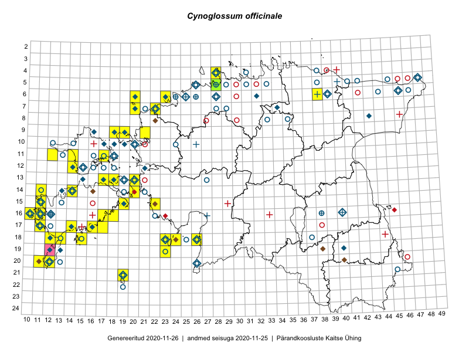

Cynoglossum officinale
Uuendatud: 2016-12-02
Kaardile koondatud taksonid: Cynoglossum officinale L.

Kaart põhineb 37 vaatlusel. Taksonit on leitud 28 ruudust.
Kuvatud viited 20 esimesele andmebaasikirjele, ülejäänud PlutoFis
- Peedu Saar, Elle Roosaluste: 2015-07-12: 13-20: ala
- Toomas Kukk: 2014-06-21: 16-10: ala
- Ott Luuk, Elle Roosaluste: 2015-05-29: 18-23: ala
- Ott Luuk: 2015-05-30: 19-23: ala
- Indrek Tammekänd, Jana Galadi: 2015-06-03: 15-22: GPS punkt
- Eeva-Maria Jeletsky, Tarmo Niitla: 2015-06-27: 11-12: ala
- Eeva-Maria Jeletsky, Tarmo Niitla: 2015-07-15: 23-37: ala
- Meeli Mesipuu, Kadri Tali: 2015-06-26: 14-20: ala
- Meeli Mesipuu, Kadri Tali: 2015-06-26: 14-20: GPS punkt
- Mari Reitalu, Oliver Parrest: 2015-07-14: 14-11: ala
- Mari Reitalu, Sirje Azarov, Oliver Parrest: 2015-08-02: 18-12: ala
- Mari Reitalu, Oliver Parrest: 2015-07-16: 15-11: ala
- Mari Reitalu, Sirje Azarov: 2015-05-16: 15-19: ala
- Mari Reitalu: 2014-06-14: 18-13: ala
- Mari Reitalu, Triin Reitalu: 2015-08-05: 17-11: ala
- Mari Reitalu: 2014-07-17: 18-15: ala
- Mari Metsoja, Jaak-Albert Metsoja, Ott Luuk: 2015-06-04: 06-23: ala
- Meeli Mesipuu, Tiiu Kull: 2016-05-27: 15-11: GPS punkt
- Toomas Kukk, Sander Laherand: 2016-07-07: 09-18: ala
- Erkki Otsman, Sergei Smirnov: 2016-06-15: 06-49: ala